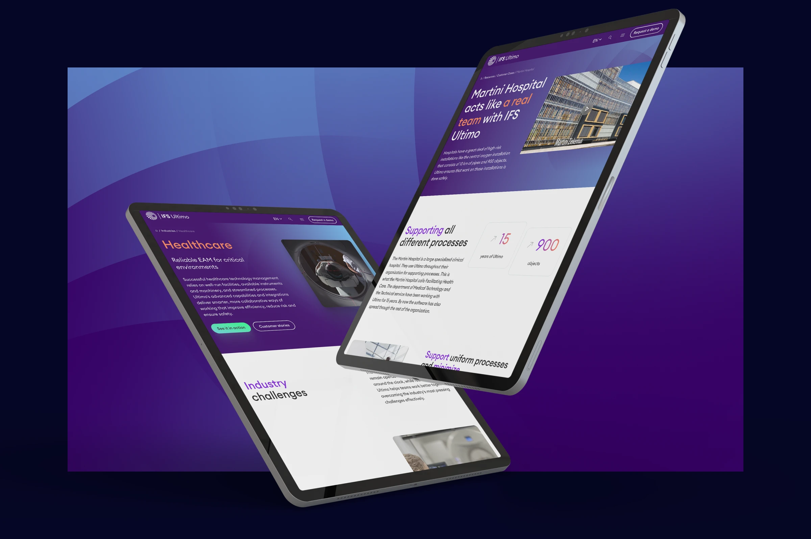
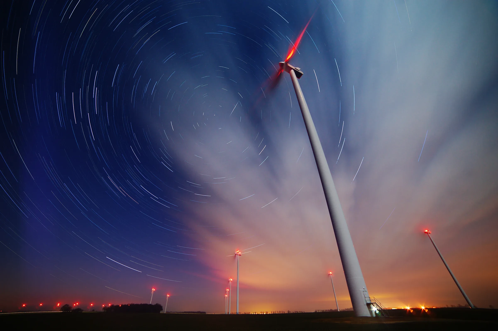
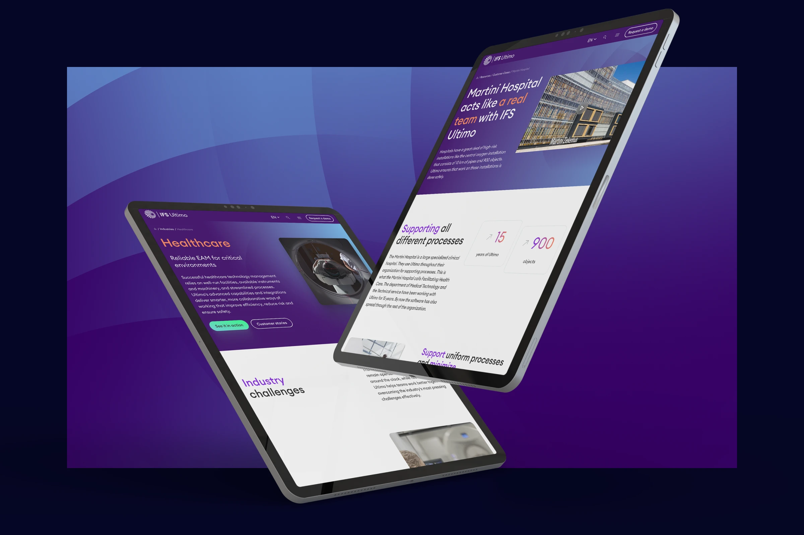
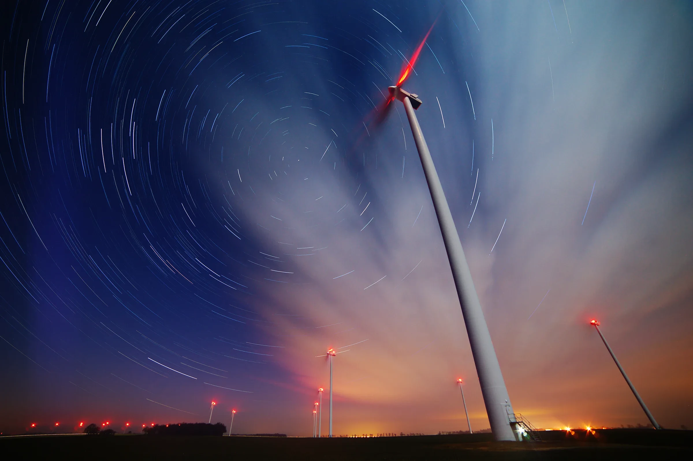

Gearfreak
Branding

What
Webdesign
Where
WADM
Role
Designer
After six years, Ultimo’s website no longer reflected the company’s growth and transformation. The leading cloud-based Enterprise Asset Management (EAM) software provider had expanded its reputation, client base, and reach—culminating in its 2022 acquisition by Swedish tech giant IFS. With rising competition, shifting audiences, and a need for a sharper message, the time had come for a complete digital overhaul by WADM that matched Ultimo’s new global ambitions.
Design
The new IFS Ultimo website was designed to emphasize growth potential and strengthen its global presence, especially in the US and Scandinavia. The strategy combined a bold, data-driven story with a refined visual identity and an entirely new UX. The site blends clarity and interactivity through graphs, infographics, and whitepapers while building emotional connection via testimonials, case studies, and animated visuals—all structured to guide C-level decision-makers and complex DMUs through a smarter sales funnel.
Result
Built by WADM on Statamic CMS, the new website unites strategic clarity, technical excellence, and a strong human touch. It features micro animations, GSAP scroll effects, video showcases, multilingual support (including Swedish), and user-friendly navigation tailored to different roles. The result: a technically advanced, visually powerful, and emotionally engaging platform that’s been met with enthusiasm across the industry and renewed pride among the 7,000 global IFS employees.


 





More posts